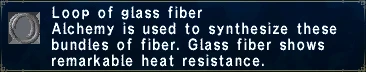

Level 75 reference · Zenith rules

Statistics
Loop of Glass Fiber
Alchemy is used to synthesize these
bundles of fiber. Glass fiber shows
remarkable heat resistance.
Stackable: 12
|
Other Uses
Guild Points Value: None
Used in Quest: None
NPC Sell Price: 154-164 gil
|
Synthesis Recipes
|
Alchemy (61)
- Yield: Glass Fiber x 1
- HQ 1: Glass Fiber x 2
- HQ 2: Glass Fiber x 3
- HQ 3: Glass Fiber x 4
- Fire Crystal
|
Alchemy (62)
- Yield: Glass Fiber x 3
- HQ 1: Glass Fiber x 6
- HQ 2: Glass Fiber x 9
- Fire Crystal
|
|
Used in Synthesis Recipes
- Artificial Lens - Alchemy (34)
- Brilliant Snow - Alchemy (70), Leathercraft (10)
- Carbon Fishing Rod - Alchemy (53)
- Composite Fishing Rod - Alchemy (89)
- Crossbow - Woodworking (33), Smithing (8)
- Frog Lure - Alchemy (47), Goldsmithing (12)
- Glass Fiber Fishing Rod - Alchemy (25, 29)Verification Needed
- Halcyon Rod - Alchemy (76)
- Minnow - Alchemy (26), Goldsmithing (10Verification Needed
- Minnow - Alchemy (31), Goldsmithing (2)
- Prism Powder - Alchemy (36, 41)Verification Needed
- Rainbow Powder - Alchemy (71)
- Shrimp Lure - Alchemy (48), Goldsmithing (21)
- Single Hook Fishing Rod - Alchemy (69)
- Skeleton Key - Bonecraft (43), Alchemy (31)
- War Bow - Woodworking (58), Alchemy (25)
- Worm Lure - Alchemy (46), Goldsmithing (12)
- Worm Lure - Alchemy (46), Smithing (9)
|
Desynthesis Recipes
None
|
Obtained from Desynthesis
|
How to Obtain
Merchants
Adapted from Eden Wiki: Glass Fiber · Contributors and history · CC BY-SA 4.0. Revision 47381. Layout, links and optional background text adapted for Zenith.